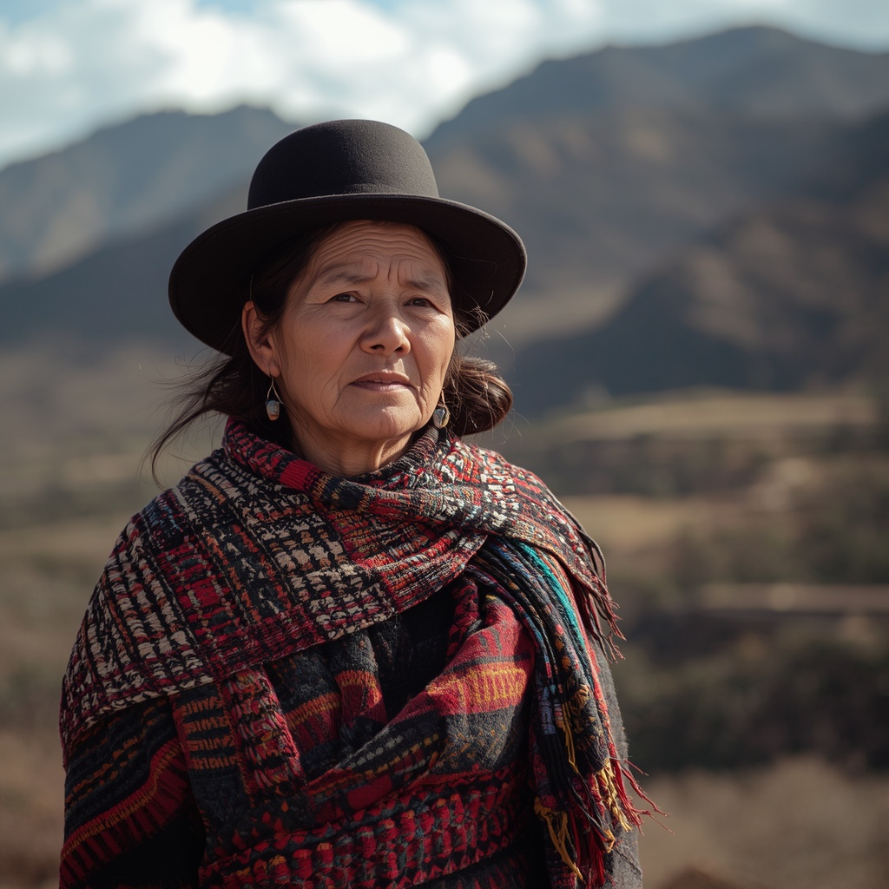

🧑🤝🧑 世界の民族・人びと
People of the World。国境を越えて暮らす人びとを、地域ごとに紹介します。伝統だけでなく、今の暮らしも一緒に。

アイマラ
🗣 使用言語
アイマラ語、スペイン語、ケチュア語（一部地域）
👥 人口の目安
約230万人（ボリビア約159万人、ペルー約66万人、チリ約18万人など）
👘 伝統衣装
耳当て付きの編み帽子「チュヨ」、荷物や赤子を運ぶための織物「アワヨ」、幾重にも重ねたスカート「ポリェラ」を着用し、女性は1920年代に定着したボウラーハット（山高帽）を被る。
🏠 住居
アンデス高地の伝統的な住居は日干しレンガ（アドベ）や石造りが一般的で、プーナ草（イチュ）などを葺いた屋根を持つ。
🍲 食文化
ジャガイモを凍結乾燥させた保存食「チューニョ」、チューニョと肉・野菜を煮込んだ「チャイロ」、キヌアなどのアンデス産穀物を用いた料理が中心で、コカの葉は茶や医薬的用途としても伝統的に用いられる。
🎵 音楽・踊り
パンパイプ「シクリ」の合奏やチャランゴなどの弦楽器を用いた音楽が祭礼や共同体行事で演奏される。
🎉 行事・祭り
冬至（6月21日）に祝われる「アイマラ正月（ウィルカクティ／マチャクマラ）」や、ラ・パスで開催されるミニチュア市「アラシタス」が代表的な行事として知られる。
🙏 信仰・価値観
山の精霊「アチャチラ」への信仰や、季節の巡りを重んじる「パチャクティ」の世界観を持ち、カトリック信仰と融合した独自の宗教文化が受け継がれている。多色旗「ウィファラ」は先住民のアイデンティティの象徴として用いられる。
📜 歴史
紀元110年頃に興ったとされるティワナク文明との関わりが深く、15世紀末にインカ帝国の支配下に入った後、16世紀にはスペインの植民地支配を受けた。19世紀末の太平洋戦争（1879～1883年）を経て、居住地域の一部はチリ領となった。
🏙 現代の暮らし
農業と牧畜を中心とした暮らしを営む地域が多く、2005年にはアイマラ系のエボ・モラレスがボリビア初の先住民出身大統領に就任するなど、政治的な存在感も高まっている。
🇯🇵 日本との関係
JICAはボリビアのアルティプラーノ（高原地帯）でキヌアの生産性向上や市場志向型農業の支援を行っており、アイマラ系の農家もその対象に含まれる。ボリビアには100年以上前から続く日本人移住者の農業コミュニティもあり、同じ高原地域で共存してきた歴史がある。
🌍 関連する国


出典: https://en.wikipedia.org/wiki/Aymara_people(2026-09-01時点) / https://www.jica.go.jp/overseas/bolivia/index.html(2026-09-01時点)